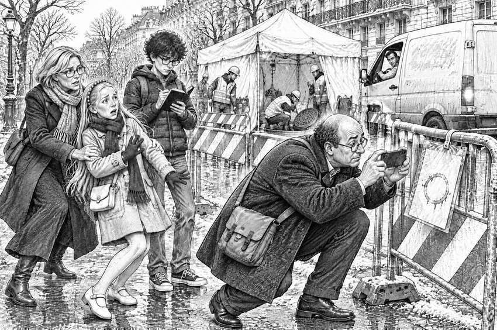
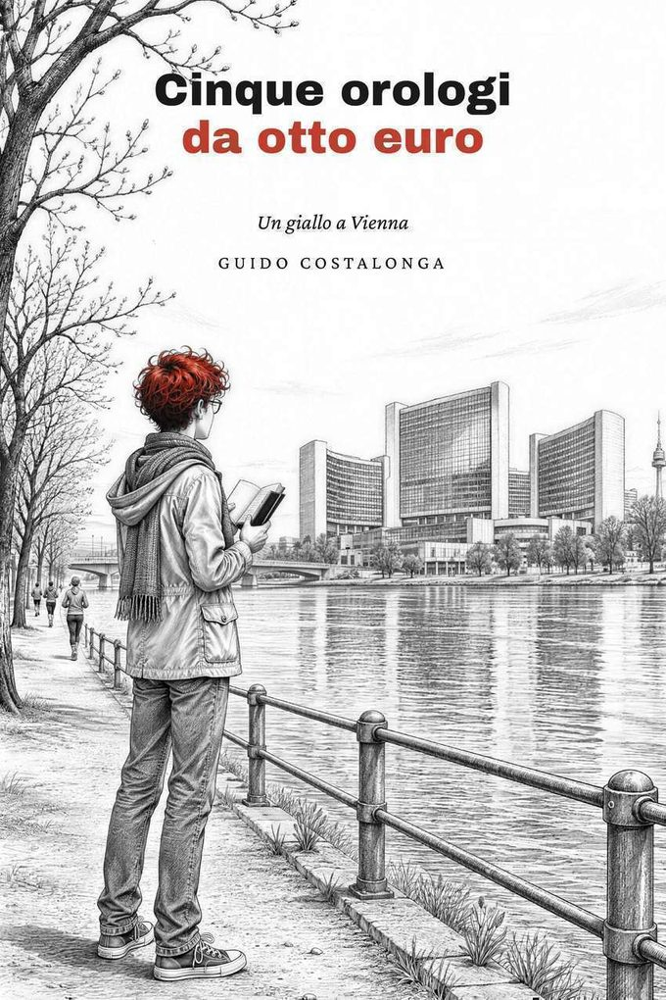

I gialli di Alvise · I libri · Volume 2

I gialli di Alvise · Volume 2 · Parigi
Le transenne del Louvre
Un giallo per ragazzi in venti capitoli, di Guido Costalonga
Non stavano riparando la strada. La stavano usando come una porta.
Parigi, tra Natale e l’Epifania. La famiglia Bertolin parte per undici giorni di vacanza con una lista di quarantatré voci, un biglietto per il Louvre alle nove e mezza e un papà assessore che non riesce a smettere di guardare la segnaletica.
Alvise ha quattordici anni, i capelli rossi e un taccuino nero. Il primo giorno conta le svolte del taxi: undici minuti di deviazione. Poi i cantieri dell’emergenza gas attorno al museo, dove nessuno scava, la stessa fotocopia con la stessa macchia di caffè e una cassa di legno che di notte scende in un tombino.
Per capire che cosa si prepara davanti a tutti servono gli occhi di una famiglia intera: chi conta i minuti, chi guarda le mani, chi i vestiti, chi il ritmo dei passi. E qualcuno disposto ad ascoltarli.
Il libro in breve
Che cosa c’è da sapere
- Serie
- I gialli di Alvise, secondo volume. Si può leggere da solo.
- Dove e quando
- Parigi, tra Natale e l’Epifania. Undici giorni di vacanza.
- Capitoli
- 20, brevi, accompagnati da tavole a china.
- Età
- Dai 10 ai 14 anni.
- Genere
- Giallo per ragazzi, senza omicidi e senza scene di sangue.
- Autore
- Guido Costalonga. Prima edizione: 2026.
Dentro il libro
I 20 capitoli

- Quarantatré voci e tre pouff
- Undici minuti di deviazione
- Il foglio con la macchia di caffè
- Il balletto delle sei e mezzo
- Le domande di Monsieur Perrin
- La cassa che scese nel tombino
- Il biglietto numero centoquattordici
- Il fumo delle 6.52
- Tre transenne su una mappa
- Le regole sul tovagliolo
- Il guanto rosso
- Un furgone che dorme nel posto sbagliato
- La visita dell’assessore
- I moduli, assessore
- Il capitano che parlava come i nonni
- Una catena, non un orario
- La crêpe che non era una crêpe
- Il circo che smonta
- Nove casse nel magazzino
- Il guanto sinistro
Dal primo capitolo
Come comincia
La lista contava quarantatré voci e abitava nei telefoni di tutti.
Era stata un’idea di Alvise: una lista condivisa su un’applicazione, così ognuno la vede, ognuno spunta, nessuno può dire «non lo sapevo». La proposta era passata in famiglia con quattro voti a favore e un astenuto, il papà, che alle applicazioni preferiva i fogli e volle metterlo a verbale. Poi, in tre settimane, di voci ne aveva spuntate più lui di tutti gli altri messi insieme, con il telefono tenuto a mezzo braccio di distanza e un dito solo, quello che usava per tutto.
La serie
Gli altri volumi
Ogni volume è una storia completa: stessi personaggi, città e caso nuovi.
- L’orologio di AlexanderplatzVolume 1 · Berlino

Cinque orologi da otto euroVolume 3 · Vienna
Conosci la famiglia Bertolin · Vai ai giochi · Per genitori e insegnanti